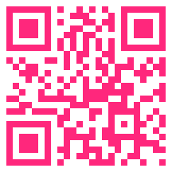
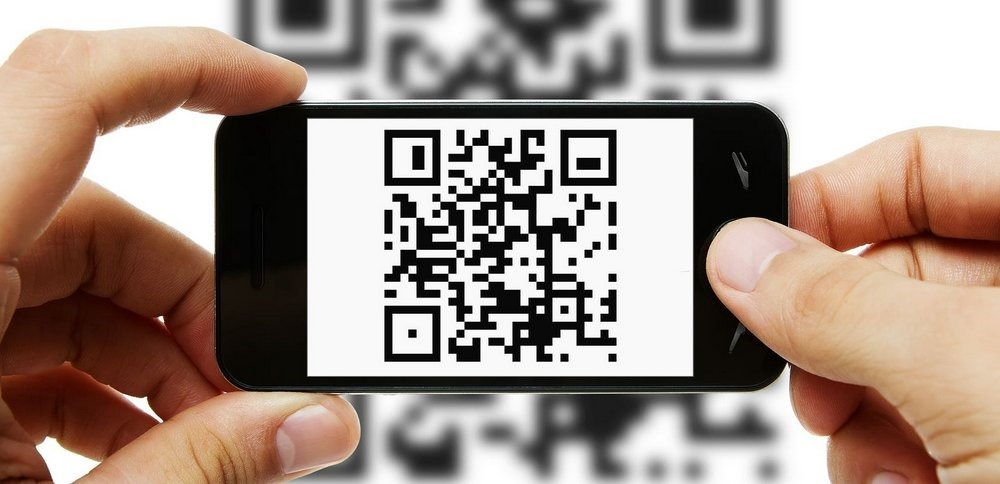

<ion-app>
  <ion-content>
    <ion-header [translucent]="true">
      <ion-toolbar color="rose">
        <ion-title style="text-align: center"><strong>Bienvenue</strong></ion-title>
      </ion-toolbar>
    </ion-header>

    
    <h1 style="text-align: right;margin-top: -33px;"><strong>code-barres</strong></h1>


    
    <h3 style="text-align: center;">Le code QR est un type de code-barres en deux dimensions constitué de modules noirs disposés dans un carré à fond blanc. L'agencement de ces points définit l'information que contient le code</h3>

    <h1 style="text-align: center;"><strong>Lets try it </strong><br> </h1>
    <ion-button routerLink="../../menu" color="success" expand="block">
      <strong> Scanner</strong>
      <ion-icon name="arrow-forward-outline"></ion-icon>
    </ion-button>

  </ion-content>
</ion-app>